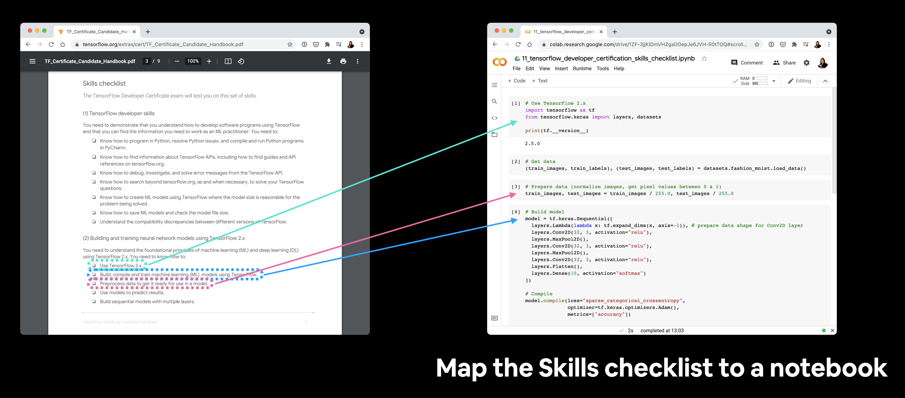
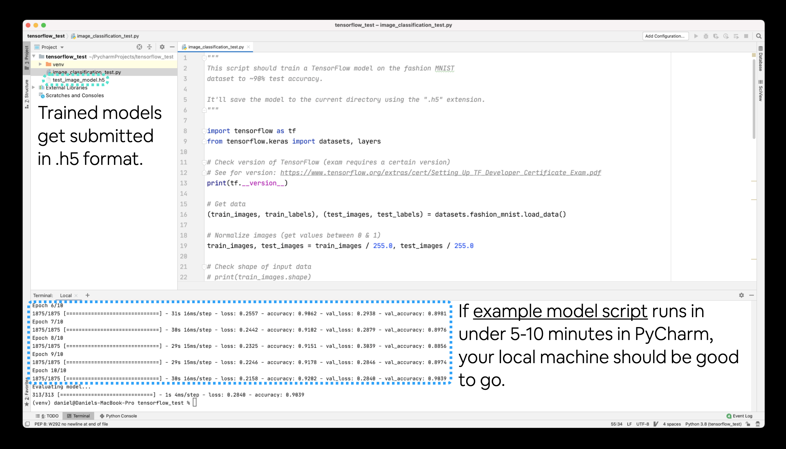

All of the course materials for the Zero to Mastery Deep Learning with TensorFlow course.
This course will teach you the foundations of deep learning and how to build and train neural networks for various problem types with TensorFlow/Keras.
- Watch the first 14-hours of the course on YouTube (notebooks 00, 01, 02)
- Read the beautiful online book version of the course
- Sign up to the full course on the Zero to Mastery Academy (videos for notebooks 03-10)
- Got questions about the course? Check out the livestream Q&A for the course launch
- Get a quick overview of TensorFlow with the TensorFlow Cheatsheet
- Fixes and updates
- Course materials (everything you'll need for completing the course)
- Course structure (how this course is taught)
- Should you do this course? (decide by answering a couple simple questions)
- Prerequisites (what skills you'll need to do this course)
- Exercises & Extra-curriculum (challenges to practice what you've learned and resources to learn more)
- Ask a question (like to know more? go here)
- Status
- Log (updates, changes and progress)
- 2 May 2024 - Update section 11 to reflect closing of TensorFlow Developer Certification program by Google (see #645 for more)
- 18 Aug 2023 - Update Notebook 05 to fix #544 and #553, see #575 for full notes
- In short, if you're using
tf.keras.applications.EfficientNetB0and facing errors, swap totf.keras.applications.efficientnet_v2.EfficientNetV2B0
- In short, if you're using
- 26 May 2023 - Update Notebook 08 for new version of TensorFlow + update Notebook 09 for new version of TensorFlow & spaCy, see update notes for 09: #557
- 19 May 2023 - Update Notebook 07 for new version of TensorFlow + fix model loading errors (TensorFlow 2.13+ required), see: #550
- 18 May 2023 - Update Notebook 06 for new TensorFlow namespaces (no major functionality change, just different imports), see: #549
- 12 May 2023 - Notebook 05 new namespaces added for
tf.keras.layers, see #547, also add fix for issue withmodel.load_weights()in Notebook 05, see #544, if you're having trouble saving/loading the model weights, also see #553 - 12 May 2023 - Newer versions of TensorFlow (2.10+) use
learning_rateinstead oflrintf.keras.optimizers(e.g.tf.keras.optimizers.Adam(learning_rate=0.001), oldlrstill works but is deprecated - 02 Dec 2021 - Added fix for TensorFlow 2.7.0+ for notebook 02, see discussion for more
- 11 Nov 2021 - Added fix for TensorFlow 2.7.0+ for notebook 01, see discussion for more
This table is the ground truth for course materials. All the links you need for everything will be here.
Key:
- Number: The number of the target notebook (this may not match the video section of the course but it ties together all of the materials in the table)
- Notebook: The notebook for a particular module with lots of code and text annotations (notebooks from the videos are based on these)
- Data/model: Links to datasets/pre-trained models for the associated notebook
- Exercises & Extra-curriculum: Each module comes with a set of exercises and extra-curriculum to help practice your skills and learn more, I suggest going through these before you move onto the next module
- Slides: Although we focus on writing TensorFlow code, we sometimes use pretty slides to describe different concepts, you'll find them here
Note: You can get all of the notebook code created during the videos in the video_notebooks directory.
This course is code first. The goal is to get you writing deep learning code as soon as possible.
It is taught with the following mantra:
Code -> Concept -> Code -> Concept -> Code -> Concept
This means we write code first then step through the concepts behind it.
If you've got 6-months experience writing Python code and a willingness to learn (most important), you'll be able to do the course.
Do you have 1+ years experience with deep learning and writing TensorFlow code?
If yes, no you shouldn't, use your skills to build something.
If no, move onto the next question.
Have you done at least one beginner machine learning course and would like to learn about deep learning/how to build neural networks with TensorFlow?
If yes, this course is for you.
If no, go and do a beginner machine learning course and if you decide you want to learn TensorFlow, this page will still be here.
What do I need to know to go through this course?
- 6+ months writing Python code. Can you write a Python function which accepts and uses parameters? Thats good enough. If you dont know what that means, spend another month or two writing Python code and then come back here.
- At least one beginner machine learning course. Are you familiar with the idea of training, validation and test sets? Do you know what supervised learning is? Have you used pandas, NumPy or Matplotlib before? If no to any of these, Id going through at least one machine learning course which teaches these first and then coming back.
- Comfortable using Google Colab/Jupyter Notebooks. This course uses Google Colab throughout. If you have never used Google Colab before, it works very similar to Jupyter Notebooks with a few extra features. If youre not familiar with Google Colab notebooks, Id suggest going through the Introduction to Google Colab notebook.
- Plug: The Zero to Mastery beginner-friendly machine learning course (I also teach this) teaches all of the above (and this course is designed as a follow on).
To prevent the course from being 100+ hours (deep learning is a broad field), various external resources for different sections are recommended to puruse under your own discretion.
You can find solutions to the exercises in extras/solutions/, there's a notebook per set of exercises (one for 00, 01, 02... etc). Thank you to Ashik Shafi for all of the efforts creating these.
- Create a vector, scalar, matrix and tensor with values of your choosing using
tf.constant(). - Find the shape, rank and size of the tensors you created in 1.
- Create two tensors containing random values between 0 and 1 with shape
[5, 300]. - Multiply the two tensors you created in 3 using matrix multiplication.
- Multiply the two tensors you created in 3 using dot product.
- Create a tensor with random values between 0 and 1 with shape
[224, 224, 3]. - Find the min and max values of the tensor you created in 6 along the first axis.
- Created a tensor with random values of shape
[1, 224, 224, 3]then squeeze it to change the shape to[224, 224, 3]. - Create a tensor with shape
[10]using your own choice of values, then find the index which has the maximum value. - One-hot encode the tensor you created in 9.
- Read through the list of TensorFlow Python APIs, pick one we haven't gone through in this notebook, reverse engineer it (write out the documentation code for yourself) and figure out what it does.
- Try to create a series of tensor functions to calculate your most recent grocery bill (it's okay if you don't use the names of the items, just the price in numerical form).
- How would you calculate your grocery bill for the month and for the year using tensors?
- Go through the TensorFlow 2.x quick start for beginners tutorial (be sure to type out all of the code yourself, even if you don't understand it).
- Are there any functions we used in here that match what's used in there? Which are the same? Which haven't you seen before?
- Watch the video "What's a tensor?" - a great visual introduction to many of the concepts we've covered in this notebook.
- Create your own regression dataset (or make the one we created in "Create data to view and fit" bigger) and build fit a model to it.
- Try building a neural network with 4 Dense layers and fitting it to your own regression dataset, how does it perform?
- Try and improve the results we got on the insurance dataset, some things you might want to try include:
- Building a larger model (how does one with 4 dense layers go?).
- Increasing the number of units in each layer.
- Lookup the documentation of Adam and find out what the first parameter is, what happens if you increase it by 10x?
- What happens if you train for longer (say 300 epochs instead of 200)?
- Import the Boston pricing dataset from TensorFlow
tf.keras.datasetsand model it.
- MIT introduction deep learning lecture 1 - gives a great overview of what's happening behind all of the code we're running.
- Reading: 1-hour of Chapter 1 of Neural Networks and Deep Learning by Michael Nielson - a great in-depth and hands-on example of the intuition behind neural networks.
- To practice your regression modelling with TensorFlow, I'd also encourage you to look through Kaggle's datasets, find a regression dataset which sparks your interest and try to model.
- Play with neural networks in the TensorFlow Playground for 10-minutes. Especially try different values of the learning, what happens when you decrease it? What happens when you increase it?
- Replicate the model pictured in the TensorFlow Playground diagram below using TensorFlow code. Compile it using the Adam optimizer, binary crossentropy loss and accuracy metric. Once it's compiled check a summary of the model.
 Try this network out for yourself on the TensorFlow Playground website. Hint: there are 5 hidden layers but the output layer isn't pictured, you'll have to decide what the output layer should be based on the input data.
Try this network out for yourself on the TensorFlow Playground website. Hint: there are 5 hidden layers but the output layer isn't pictured, you'll have to decide what the output layer should be based on the input data. - Create a classification dataset using Scikit-Learn's
make_moons()function, visualize it and then build a model to fit it at over 85% accuracy. - Train a model to get 88%+ accuracy on the fashion MNIST test set. Plot a confusion matrix to see the results after.
- Recreate TensorFlow's softmax activation function in your own code. Make sure it can accept a tensor and return that tensor after having the softmax function applied to it.
- Create a function (or write code) to visualize multiple image predictions for the fashion MNIST at the same time. Plot at least three different images and their prediction labels at the same time. Hint: see the classification tutorial in the TensorFlow documentation for ideas.
- Make a function to show an image of a certain class of the fashion MNIST dataset and make a prediction on it. For example, plot 3 images of the
T-shirtclass with their predictions.
- Watch 3Blue1Brown's neural networks video 2: Gradient descent, how neural networks learn. After you're done, write 100 words about what you've learned.
- If you haven't already, watch video 1: But what is a Neural Network?. Note the activation function they talk about at the end.
- Watch MIT's introduction to deep learning lecture 1 (if you haven't already) to get an idea of the concepts behind using linear and non-linear functions.
- Spend 1-hour reading Michael Nielsen's Neural Networks and Deep Learning book.
- Read the ML-Glossary documentation on activation functions. Which one is your favourite?
- After you've read the ML-Glossary, see which activation functions are available in TensorFlow by searching "tensorflow activation functions".
- Spend 20-minutes reading and interacting with the CNN explainer website.
- What are the key terms? e.g. explain convolution in your own words, pooling in your own words
- Play around with the "understanding hyperparameters" section in the CNN explainer website for 10-minutes.
- What is the kernel size?
- What is the stride?
- How could you adjust each of these in TensorFlow code?
- Take 10 photos of two different things and build your own CNN image classifier using the techniques we've built here.
- Find an ideal learning rate for a simple convolutional neural network model on your the 10 class dataset.
- Watch: MIT's Introduction to Deep Computer Vision lecture. This will give you a great intuition behind convolutional neural networks.
- Watch: Deep dive on mini-batch gradient descent by deeplearning.ai. If you're still curious about why we use batches to train models, this technical overview covers many of the reasons why.
- Read: CS231n Convolutional Neural Networks for Visual Recognition class notes. This will give a very deep understanding of what's going on behind the scenes of the convolutional neural network architectures we're writing.
- Read: "A guide to convolution arithmetic for deep learning". This paper goes through all of the mathematics running behind the scenes of our convolutional layers.
- Code practice: TensorFlow Data Augmentation Tutorial. For a more in-depth introduction on data augmentation with TensorFlow, spend an hour or two reading through this tutorial.
- Build and fit a model using the same data we have here but with the MobileNetV2 architecture feature extraction (
mobilenet_v2_100_224/feature_vector) from TensorFlow Hub, how does it perform compared to our other models? - Name 3 different image classification models on TensorFlow Hub that we haven't used.
- Build a model to classify images of two different things you've taken photos of.
- You can use any feature extraction layer from TensorFlow Hub you like for this.
- You should aim to have at least 10 images of each class, for example to build a fridge versus oven classifier, you'll want 10 images of fridges and 10 images of ovens.
- What is the current best performing model on ImageNet?
- Hint: you might want to check sotabench.com for this.
- Read through the TensorFlow Transfer Learning Guide and define the main two types of transfer learning in your own words.
- Go through the Transfer Learning with TensorFlow Hub tutorial on the TensorFlow website and rewrite all of the code yourself into a new Google Colab notebook making comments about what each step does along the way.
- We haven't covered fine-tuning with TensorFlow Hub in this notebook, but if you'd like to know more, go through the fine-tuning a TensorFlow Hub model tutorial on the TensorFlow homepage.How to fine-tune a tensorflow hub model:
- Look into experiment tracking with Weights & Biases, how could you integrate it with our existing TensorBoard logs?
- Use feature-extraction to train a transfer learning model on 10% of the Food Vision data for 10 epochs using
tf.keras.applications.EfficientNetB0as the base model. Use theModelCheckpointcallback to save the weights to file. - Fine-tune the last 20 layers of the base model you trained in 2 for another 10 epochs. How did it go?
- Fine-tune the last 30 layers of the base model you trained in 2 for another 10 epochs. How did it go?
- Write a function to visualize an image from any dataset (train or test file) and any class (e.g. "steak", "pizza"... etc), visualize it and make a prediction on it using a trained model.
- Read the documentation on data augmentation in TensorFlow.
- Read the ULMFit paper (technical) for an introduction to the concept of freezing and unfreezing different layers.
- Read up on learning rate scheduling (there's a TensorFlow callback for this), how could this influence our model training?
- If you're training for longer, you probably want to reduce the learning rate as you go... the closer you get to the bottom of the hill, the smaller steps you want to take. Imagine it like finding a coin at the bottom of your couch. In the beginning your arm movements are going to be large and the closer you get, the smaller your movements become.
- Take 3 of your own photos of food and use the trained model to make predictions on them, share your predictions with the other students in Discord and show off your Food Vision model .
- Train a feature-extraction transfer learning model for 10 epochs on the same data and compare its performance versus a model which used feature extraction for 5 epochs and fine-tuning for 5 epochs (like we've used in this notebook). Which method is better?
- Recreate the first model (the feature extraction model) with
mixed_precisionturned on.
- Does it make the model train faster?
- Does it effect the accuracy or performance of our model?
- What's the advantages of using
mixed_precisiontraining?
- Spend 15-minutes reading up on the EarlyStopping callback. What does it do? How could we use it in our model training?
- Spend an hour reading about Streamlit. What does it do? How might you integrate some of the things we've done in this notebook in a Streamlit app?
Note: The chief exercise for Milestone Project 1 is to finish the "TODO" sections in the Milestone Project 1 Template notebook. After doing so, move onto the following.
- Use the same evaluation techniques on the large-scale Food Vision model as you did in the previous notebook (Transfer Learning Part 3: Scaling up). More specifically, it would be good to see:
- A confusion matrix between all of the model's predictions and true labels.
- A graph showing the f1-scores of each class.
- A visualization of the model making predictions on various images and comparing the predictions to the ground truth.
- For example, plot a sample image from the test dataset and have the title of the plot show the prediction, the prediction probability and the ground truth label.
- Note: To compare predicted labels to test labels, it might be a good idea when loading the test data to set
shuffle=False(so the ordering of test data is preserved alongside the order of predicted labels).
- Take 3 of your own photos of food and use the Food Vision model to make predictions on them. How does it go? Share your images/predictions with the other students.
- Retrain the model (feature extraction and fine-tuning) we trained in this notebook, except this time use
EfficientNetB4as the base model instead ofEfficientNetB0. Do you notice an improvement in performance? Does it take longer to train? Are there any tradeoffs to consider? - Name one important benefit of mixed precision training, how does this benefit take place?
- Read up on learning rate scheduling and the learning rate scheduler callback. What is it? And how might it be helpful to this project?
- Read up on TensorFlow data loaders (improving TensorFlow data loading performance). Is there anything we've missed? What methods you keep in mind whenever loading data in TensorFlow? Hint: check the summary at the bottom of the page for a great round up of ideas.
- Read up on the documentation for TensorFlow mixed precision training. What are the important things to keep in mind when using mixed precision training?
- Rebuild, compile and train
model_1,model_2andmodel_5using the Keras Sequential API instead of the Functional API. - Retrain the baseline model with 10% of the training data. How does perform compared to the Universal Sentence Encoder model with 10% of the training data?
- Try fine-tuning the TF Hub Universal Sentence Encoder model by setting
training=Truewhen instantiating it as a Keras layer.
# We can use this encoding layer in place of our text_vectorizer and embedding layer
sentence_encoder_layer = hub.KerasLayer("https://tfhub.dev/google/universal-sentence-encoder/4",
input_shape=[],
dtype=tf.string,
trainable=True) # turn training on to fine-tune the TensorFlow Hub model
- Retrain the best model you've got so far on the whole training set (no validation split). Then use this trained model to make predictions on the test dataset and format the predictions into the same format as the
sample_submission.csvfile from Kaggle (see the Files tab in Colab for what thesample_submission.csvfile looks like). Once you've done this, make a submission to the Kaggle competition, how did your model perform? - Combine the ensemble predictions using the majority vote (mode), how does this perform compare to averaging the prediction probabilities of each model?
- Make a confusion matrix with the best performing model's predictions on the validation set and the validation ground truth labels.
To practice what you've learned, a good idea would be to spend an hour on 3 of the following (3-hours total, you could through them all if you want) and then write a blog post about what you've learned.
- For an overview of the different problems within NLP and how to solve them read through:
- Go through MIT's Recurrent Neural Networks lecture. This will be one of the greatest additions to what's happening behind the RNN model's you've been building.
- Read through the word embeddings page on the TensorFlow website. Embeddings are such a large part of NLP. We've covered them throughout this notebook but extra practice would be well worth it. A good exercise would be to write out all the code in the guide in a new notebook.
- For more on RNN's in TensorFlow, read and reproduce the TensorFlow RNN guide. We've covered many of the concepts in this guide, but it's worth writing the code again for yourself.
- Text data doesn't always come in a nice package like the data we've downloaded. So if you're after more on preparing different text sources for being with your TensorFlow deep learning models, it's worth checking out the following:
- TensorFlow text loading tutorial.
- Reading text files with Python by Real Python.
- This notebook has focused on writing NLP code. For a mathematically rich overview of how NLP with Deep Learning happens, read Stanford's Natural Language Processing with Deep Learning lecture notes Part 1.
- For an even deeper dive, you could even do the whole CS224n (Natural Language Processing with Deep Learning) course.
- Great blog posts to read:
- Andrei Karpathy's The Unreasonable Effectiveness of RNNs dives into generating Shakespeare text with RNNs.
- Text Classification with NLP: Tf-Idf vs Word2Vec vs BERT by Mauro Di Pietro. An overview of different techniques for turning text into numbers and then classifying it.
- What are word embeddings? by Machine Learning Mastery.
- Other topics worth looking into:
- Attention mechanisms. These are a foundational component of the transformer architecture and also often add improvements to deep NLP models.
- Transformer architectures. This model architecture has recently taken the NLP world by storm, achieving state of the art on many benchmarks. However, it does take a little more processing to get off the ground, the HuggingFace Models (formerly HuggingFace Transformers) library is probably your best quick start.
- Train
model_5on all of the data in the training dataset for as many epochs until it stops improving. Since this might take a while, you might want to use:
tf.keras.callbacks.ModelCheckpointto save the model's best weights only.tf.keras.callbacks.EarlyStoppingto stop the model from training once the validation loss has stopped improving for ~3 epochs.
- Checkout the Keras guide on using pretrained GloVe embeddings. Can you get this working with one of our models?
- Hint: You'll want to incorporate it with a custom token Embedding layer.
- It's up to you whether or not you fine-tune the GloVe embeddings or leave them frozen.
- Try replacing the TensorFlow Hub Universal Sentence Encoder pretrained embedding for the TensorFlow Hub BERT PubMed expert (a language model pretrained on PubMed texts) pretrained embedding. Does this effect results?
- Note: Using the BERT PubMed expert pretrained embedding requires an extra preprocessing step for sequences (as detailed in the TensorFlow Hub guide).
- Does the BERT model beat the results mentioned in this paper? https://arxiv.org/pdf/1710.06071.pdf
- What happens if you were to merge our
line_numberandtotal_linesfeatures for each sequence? For example, created aX_of_Yfeature instead? Does this effect model performance?
- Another example:
line_number=1andtotal_lines=11turns intoline_of_X=1_of_11.
- Write a function (or series of functions) to take a sample abstract string, preprocess it (in the same way our model has been trained), make a prediction on each sequence in the abstract and return the abstract in the format:
PREDICTED_LABEL:SEQUENCEPREDICTED_LABEL:SEQUENCEPREDICTED_LABEL:SEQUENCEPREDICTED_LABEL:SEQUENCE- ...
- You can find your own unstructured RCT abstract from PubMed or try this one from: Baclofen promotes alcohol abstinence in alcohol dependent cirrhotic patients with hepatitis C virus (HCV) infection.
- For more on working with text/spaCy, see spaCy's advanced NLP course. If you're going to be working on production-level NLP problems, you'll probably end up using spaCy.
- For another look at how to approach a text classification problem like the one we've just gone through, I'd suggest going through Google's Machine Learning Course for text classification.
- Since our dataset has imbalanced classes (as with many real-world datasets), so it might be worth looking into the TensorFlow guide for different methods to training a model with imbalanced classes.
- Does scaling the data help for univariate/multivariate data? (e.g. getting all of the values between 0 & 1)
- Try doing this for a univariate model (e.g.
model_1) and a multivariate model (e.g.model_6) and see if it effects model training or evaluation results.
- Get the most up to date data on Bitcoin, train a model & see how it goes (our data goes up to May 18 2021).
- You can download the Bitcoin historical data for free from coindesk.com/price/bitcoin and clicking "Export Data" -> "CSV".
- For most of our models we used
WINDOW_SIZE=7, but is there a better window size?
- Setup a series of experiments to find whether or not there's a better window size.
- For example, you might train 10 different models with
HORIZON=1but with window sizes ranging from 2-12.
- Create a windowed dataset just like the ones we used for
model_1usingtf.keras.preprocessing.timeseries_dataset_from_array()and retrainmodel_1using the recreated dataset. - For our multivariate modelling experiment, we added the Bitcoin block reward size as an extra feature to make our time series multivariate.
- Are there any other features you think you could add?
- If so, try it out, how do these affect the model?
- Make prediction intervals for future forecasts. To do so, one way would be to train an ensemble model on all of the data, make future forecasts with it and calculate the prediction intervals of the ensemble just like we did for
model_8. - For future predictions, try to make a prediction, retrain a model on the predictions, make a prediction, retrain a model, make a prediction, retrain a model, make a prediction (retrain a model each time a new prediction is made). Plot the results, how do they look compared to the future predictions where a model wasn't retrained for every forecast (
model_9)? - Throughout this notebook, we've only tried algorithms we've handcrafted ourselves. But it's worth seeing how a purpose built forecasting algorithm goes.
- Try out one of the extra algorithms listed in the modelling experiments part such as:
- Facebook's Kats library - there are many models in here, remember the machine learning practioner's motto: experiment, experiment, experiment.
- LinkedIn's Greykite library
We've only really scratched the surface with time series forecasting and time series modelling in general. But the good news is, you've got plenty of hands-on coding experience with it already.
If you'd like to dig deeper in to the world of time series, I'd recommend the following:
- Forecasting: Principles and Practice is an outstanding online textbook which discusses at length many of the most important concepts in time series forecasting. I'd especially recommend reading at least Chapter 1 in full.
- I'd definitely recommend at least checking out chapter 1 as well as the chapter on forecasting accuracy measures.
- Introduction to machine learning and time series by Markus Loning goes through different time series problems and how to approach them. It focuses on using the
sktimelibrary (Scikit-Learn for time series), though the principles are applicable elsewhere. - Why you should care about the Nate Silver vs. Nassim Taleb Twitter war by Isaac Faber is an outstanding discussion insight into the role of uncertainty in the example of election prediction.
- TensorFlow time series tutorial - A tutorial on using TensorFlow to forecast weather time series data with TensorFlow.
- The Black Swan by Nassim Nicholas Taleb - Nassim Taleb was a pit trader (a trader who trades on their own behalf) for 25 years, this book compiles many of the lessons he learned from first-hand experience. It changed my whole perspective on our ability to predict.
- 3 facts about time series forecasting that surprise experienced machine learning practitioners by Skander Hannachi, Ph.D - time series data is different to other kinds of data, if you've worked on other kinds of machine learning problems before, getting into time series might require some adjustments, Hannachi outlines 3 of the most common.
- World-class lectures by
Jordan Kern, watching these will take you from 0 to 1 with time series problems:
- Time Series Analysis - how to analyse time series data.
- Time Series Modelling - different techniques for modelling time series data (many of which aren't deep learning).
Note: As of 1 May 2024, the TensorFlow Developer Certification is no longer available for purchase. After being in contact with the TensorFlow Certification team, they stated they were closing the program with no official next steps (see #645 for more).
With this in mind, the exercises/extra-curriculum below are for archive purposes only. The rest of the course materials are still valid.
Preparing your brain
- Read through the TensorFlow Developer Certificate Candidate Handbook.
- Go through the Skills checklist section of the TensorFlow Developer Certification Candidate Handbook and create a notebook which covers all of the skills required, write code for each of these (this notebook can be used as a point of reference during the exam).
 Example of mapping the Skills checklist section of the TensorFlow Developer Certification Candidate handbook to a notebook.
Prearing your computer
- Go through the PyCharm quick start tutorials to make sure you're familiar with PyCharm (the exam uses PyCharm, you can download the free version).
- Read through and follow the suggested steps in the setting up for the TensorFlow Developer Certificate Exam guide.
- After going through (2), go into PyCharm and make sure you can train a model in TensorFlow. The model and dataset in the example
image_classification_test.pyscript on GitHub should be enough. If you can train and save the model in under 5-10 minutes, your computer will be powerful enough to train the models in the exam.- Make sure you've got experience running models locally in PyCharm before taking the exam. Google Colab (what we used through the course) is a little different to PyCharm.

Before taking the exam make sure you can run TensorFlow code on your local machine in PyCharm. If the example image_class_test.py script can run completely in under 5-10 minutes on your local machine, your local machine can handle the exam (if not, you can use Google Colab to train, save and download models to submit for the exam).
If you'd like some extra materials to go through to further your skills with TensorFlow and deep learning in general or to prepare more for the exam, I'd highly recommend the following:
- Read: How I got TensorFlow Developer Certified (and how you can too)
- Watch: How I passed the TensorFlow Developer Certification exam (and how you can too)
- Go through the TensorFlow in Practice Specialization on Coursera
- Read through the second half of Hands-On Machine Learning with Scikit-Learn, Keras & TensorFlow 2nd Edition
Deep learning is a broad topic. So this course doesn't cover it all.
Here are some of the main topics you might want to look into next:
- Transformers (the neural network architecture taking the NLP world by storm)
- Multi-modal models (models which use more than one data source such as text & images)
- Reinforcement learning
- Unsupervised learning
- Neural Networks and Deep Learning Book by Michael Nielsen - If the Zero to Mastery TensorFlow for Deep Learning course is top down, this book is bottom up. A fantastic resource to sandwich your knowledge.
- Deeplearning.AI specializations - The ZTM TensorFLow course focuses on code-first, the deeplearning.ai specializations will teach you what's going on behind the code.
- Hands-on Machine Learning with Scikit-Learn, Keras and TensorFlow Book (especially the 2nd half) - Many of the materials in this course were inspired by and guided by the pages of this beautiful text book.
- Full Stack Deep Learning - Learn how to turn your models into machine learning-powered applications.
- Made with ML MLOps materials - Similar to Full Stack Deep Learning but comprised into many small lessons around all the pieces of the puzzle (data collection, labelling, deployment and more) required to build a full-stack machine learning-powered application.
- fast.ai Curriculum - One of the best (and free) AI/deep learning courses online. Enough said.
- "How does a beginner data scientist like me gain experience?" by Daniel Bourke - Read this on how to get experience for a job after studying online/at unveristy (start the job before you have it).
Contact Daniel Bourke or add a discussion (preferred).
- 2 May 2024 - update materials to reflect closing of TensorFlow Developer Certification exam by Google (see #645 for more)
- 12 May 2023 - update several course notebooks for latest version of TensorFlow, several API updates for Notebook 05 here: #547
- 02 Dec 2021 - add fix for TensorFlow 2.7 to notebook 02
- 11 Nov 2021 - add fix for TensorFlow 2.7 to notebook 01
- 14 Aug 2021 - added a discussion with TensorFlow 2.6 updates and EfficientNetV2 notes: #166
- 16 Jul 2021 - added 35 videos to ZTM Academy + Udemy versions of the course for time series and how to pass TensorFlow Developer Certification
- 10 Jul 2021 - added 29 edited time series videos to ZTM Academy + Udemy versions of the course, more to come soon
- 07 Jul 2021 - recorded 5 videos for passing TensorFlow Developer Certification exam section - ALL VIDEOS FOR COURSE DONE!!! time to edit/upload!
- 06 Jul 2021 - (archived) added guide to TensorFlow Certification Exam: https://github.com/mrdbourke/tensorflow-deep-learning/blob/main/11_passing_the_tensorflow_developer_certification_exam.md - going to record videos for it tomorrow
- 05 Jul 2021 - making materials for TF certification exam (what/why/how)
- 02 Jul 2021 - FINISHED RECORDING VIDEOS FOR TIME SERIES SECTION!!!!! time to upload
- 30 Jun 2021 - recorded 12 videos for time series section, total heading past 60 (the biggest section yet), nearly done!!!
- 29 Jun 2021 - recorded 10 videos for time series section, total heading towards 60
- 28 Jun 2021 - recorded 10 videos for time series section, the line below says 40 videos total, actually more like 50
- 26 Jun 2021 - recorded 4 videos for time series section, looks like it'll be about 40 videos total
- 25 Jun 2021 - recorded 8 videos for time series section + fixed a bunch of typos in time series notebook
- 24 Jun 2021 - recorded 14 videos for time series section, more to come tomorrow
- 23 Jun 2021 - finished adding images to time series notebook, now to start video recording
- 22 Jun 2021 - added a bunch of images to the time series notebook/started making slides
- 21 Jun 2021 - code for time series notebook is done, now creating slides/images to prepare for recording
- 19 Jun 2021 - turned curriculum into an online book, you can read it here: https://dev.mrdbourke.com/tensorflow-deep-learning/
- 18 Jun 2021 - add exercises/extra-curriculum/outline to time series notebook
- 17 Jun 2021 - add annotations for turkey problem and model comparison in time series notebook, next is outline/images
- 16 Jun 2021 - add annotations for uncertainty and future predictions in time series notebook, next is turkey problem
- 14 Jun 2021 - add annotations for ensembling, begin on prediction intervals
- 10 Jun 2021 - finished annotations for N-BEATS algorithm, now onto ensembling/prediction intervals
- 9 Jun 2021 - add annotations for N-BEATS algorithm implementation for time series notebook
- 8 Jun 2021 - add annotations to time series notebook, all will be finished by end of week (failed)
- 4 Jun 2021 - more annotation updates to time series notebook, brick by brick!
- 3 Jun 2021 - added a bunch of annotations/explanations to time series notebook, momentum building, plenty more to come!
- 2 Jun 2021 - started adding annotations explaining the code + resources to learn more, will continue for next few days
- 1 Jun 2021 - added turkey problem to time series notebook, cleaned up a bunch of code, draft code is ready, now to write annotations/explanations
- 28 May 2021 - added future forecasts, added ensemble model, added prediction intervals to time series notebook
- 25 May 2021 - added multivariate time series to time series notebook, fix LSTM model, next we add TensorFlow windowing/experimenting with window sizes
- 24 May 2021 - fixed broken preprocessing function in time series notebook, LSTM model is broken, more material to come
- 20 May 2021 - more time series material creation
- 19 May 2021 - more time series material creation, streaming much of it live on Twitch - https://twitch.tv/mrdbourke
- 18 May 2021 - added time series forecasting notebook outline (notebook 10), going to really start ramping up the materials here
- 12 May 2021 - all videos for 09 have now been released on Udemy & ZTM!!! enjoy build SkimLit
- 11 May 2021 - 40+ section 08 & 09 videos released on Udemy & ZTM!!!
- 10 May 2021 - time series materials research + preparation
- 08 May 2021 - time series materials research + preparation
- 05 May 2021 - ~20+ videos edited for 08, ~10+ videos edited for 09, time series materials in 1st draft mode
- 04 May 2021 - fixed the remaining videos for 08 (audio missing), now onto making time series materials!
- 03 May 2021 - rerecorded 10 videos for 08 fixing the sound isse, these are going straight to editing and should be uploaded by end of week
- 02 May 2021 - found an issue with videos 09-20 of section 08 (no audio), going to rerecord them
- 29 Apr 2021 - launched on Udemy!!!
- 22 Apr 2021 - finished recording videos for 09! added slides and video notebook 09
- 21 Apr 2021 - recorded 14 videos for 09! biggggg day of recording! getting closer to finishing 09
- 20 Apr 2021 - recorded 10 videos for 09
- 19 Apr 2021 - recorded 9 videos for 09
- 16 Apr 2021 - slides done for 09, ready to start recording!
- 15 Apr 2021 - added slides, extra-curriculum, exercises and video notebook for 08, started making slides for 09, will finish tomorrow
- 14 Apr 2021 - recorded 12 videos for notebook 08, finished the section! time to make slides for 09 and get into it
- 10 Apr 2021 - recorded 4 videos for notebook 08
- 9 Apr 2021 - recorded 6 videos for notebook 08
- 8 Apr 2021 - recorded 10 videos for notebook 08! more coming tomorrow! home stretch baby!!!
- 7 Apr 2021 - added a whole bunch of images to notebook 08, getting ready for recording tomorrow!
- 1 Apr 2021 - added notebook 09: SkimLit, almost finished, a little cleaning and we'll be ready for slide making!
- 31 Mar 2021 - added notebook 08, going to finish tomorrow, then onto 09!
- 24 Mar 2021 - Recorded 8 videos for 07, finished! onto materials (slides/notebooks) for 08, 09
- 23 Mar 2021 - Recorded 6 videos for 07 (finally), going to finish tomorrow
- 22 Mar 2021 - Polished notebook 07 ready for recording, made slides for 07, added template for 07 (for a student to go through and practice), ready to record!
- 17 Mar 2021 - 99% finished notebook 07, added links to first 14 hours of the course on YouTube (10 hours in part 1, 4 hours in part 2)
- 11 Mar 2021 - added even more text annotations to notebook 07, finishing tomorrow, then slides
- 10 Mar 2021 - Typed a whole bunch of explanations into notebook 07, continuing tomorrow
- 09 Mar 2021 - fixed plenty of code in notebook 07, should run end to end very cleanly (though loading times are still a thing)
- 05 Mar 2021 - added draft notebook 07 (heaps of data loading and model training improvements in this one!), gonna fix up over next few days
- 01 Mar 2021 - Added slides for 06 (see them here)
- 26 Feb 2021 - LAUNCHED!!!!! also finished recording videos for 06, onto 07, 08, 09 for next release
- 24 Feb 2021 - recorded 9 videos for section 06, launch inbound!!!
- 23 Feb 2021 - rearranged GitHub in preparation for launch
- 18 Feb 2021 - recorded 8 videos for 05 and... it's done! onto polishing the GitHub
- 17 Feb 2021 - recorded 10 videos for 05! going to finish tomorrow
- 16 Feb 2021 - polished slides for 05 and started recording videos, got 7 videos done for 05
- 15 Feb 2021 - finished videos for 04, now preparing to record for 05!
- 12 Feb 2021 - recored 7 videos for section 04... wanted 10 but we'll take 7 ( this seems to have happened before)
- 11 Feb 2021 - NO PROGRESS - gave a Machine Learning deployment tutorial for Stanford's CS329s (using the model code from this course!!!) - see the full tutorial materials
- 08 Feb 2021 - recorded 10 videos for section 03... and section 03 is done! onto section 04
- 30 Jan 2021 - 07 Feb 2021: NO PROGRESS (working on a ML deployment lecture for Stanford's CS329s... more on this later)
- 29 Jan 2021 - recorded 9 videos for section 03... closer to 10 than yesterday but still not there
- 28 Jan 2021 - recorded 7 videos for section 03... wanted 10 but we'll take 7
- 27 Jan 2021 - recorded 10 videos for section 03
- 26 Jan 2021 - polished GitHub README (what you're looking at) with a nice table
- 23 Jan 2021 - finished slides of 06
- 22 Jan 2021 - finished review of notebook 06 & started slides of 06
- 21 Jan 2021 - finished slides for 05 & started review of 06
- 20 Jan 2021 - finished notebook 05 & 95% slides for 05
- 19 Jan 2021 - found a storage idea for data during course (use Google Storage in same region as Colab Notebooks, cheapest/fastest)
- 18 Jan 2021 - reviewed notebook 05 & slides for 05
- 17 Jan 2021 - finished notebook 04 & slides for 04
- 16 Jan 2021 - review notebook 04 & made slides for transfer learning
- 13 Jan 2021 - review notebook 03 again & finished slides for 03, BIGGGGG updates to the README, notebook 03 99% done, just need to figure out optimum way to transfer data (e.g. when a student downloads it, where's best to store it in the meantime? Dropbox? S3?
GS(too expensive) - 11 Jan 2021 - reviewed notebook 03, 95% ready for recording, onto slides for 03
- 9 Jan 2021 - I'm back baby! Finished all videos for 02, now onto slides/materials for 03, 04, 05 (then I'll get back in the lab)
- 19 Dec 2020 - ON HOLD (family holiday until Jan 02 2021)
- 18 Dec 2020 - recorded 75% of videos for 02
- 17 Dec 2020 - recorded 50% of videos for 02
- 16 Dec 2020 - recorded 100% of videos for 01
- 15 Dec 2020 - recorded 90% of videos for 01
- 09 Dec 2020 - finished recording videos for 00
- 08 Dec 2020 - recorded 90% of videos for 00
- 05 Dec 2020 - trialled recording studio for ~6 videos with notebook 00 material
- 04 Dec 2020 - setup recording studio in closet
- 03 Dec 2020 - finished notebook 02, finished slides for 02, time to setup recording studio
- 02 Dec 2020 - notebook 02 95% done, slides for 02 90% done
- 01 Dec 2020 - added notebook 02 (90% polished), start preparing slides for 02
- 27 Nov 2020 - polished notebook 01, made slides for notebook 01
- 26 Nov 2020 - polished notebook 00, made slides for notebook 00
{kind=link}